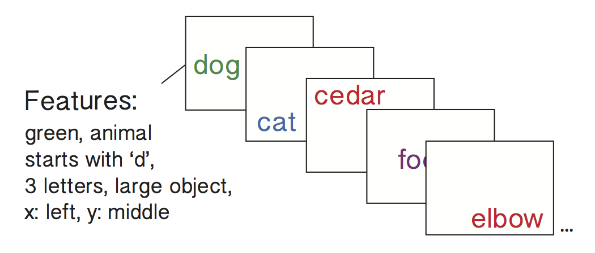
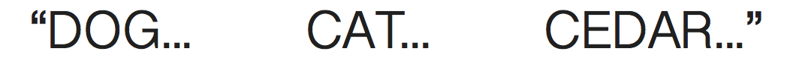
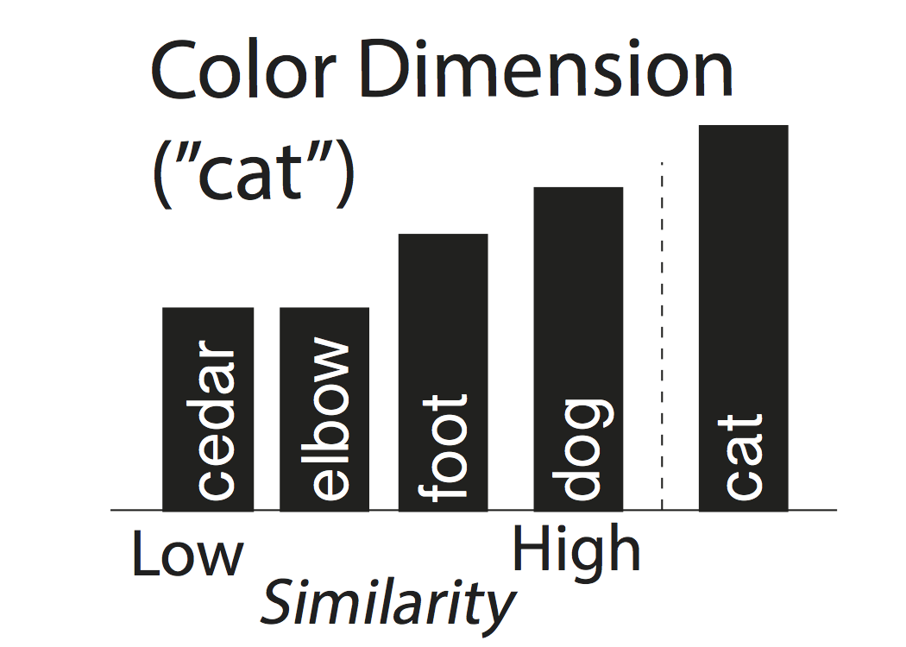
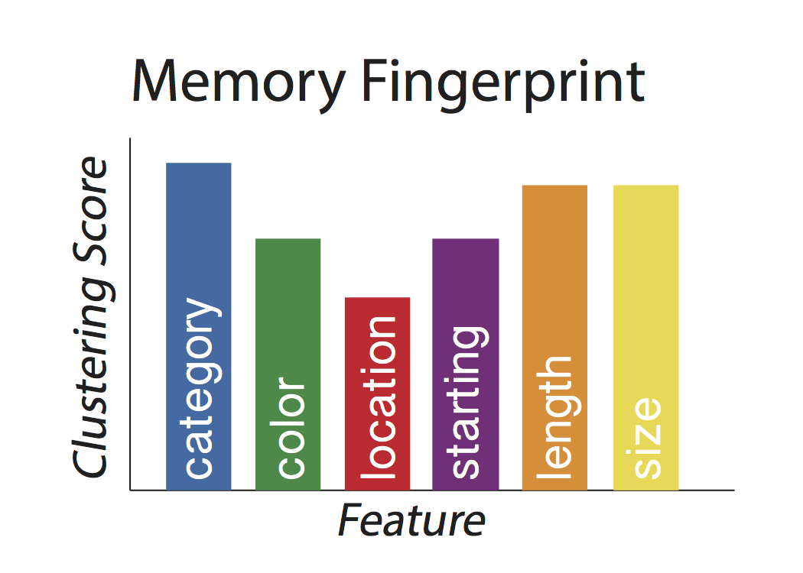

A memory fingerprint can be defined as a subject’s tendency to cluster their recall responses with respect to more than one stimulus feature dimensions. What is a “stimulus feature dimension” you ask? It is simply an attribute of the stimulus, such as its color, category, spatial location etc. Let’s walkthrough an example to gain a better intuition.
Let’s imagine you were running a free recall experiment where subjects were presented with lists of words that varied randomly over a number of distinct dimensions:
In the figure above, the first word (dog) is: green in color, an animal, starts with the letter ‘d’, is large (bigger than a shoebox) and is positioned left-center on the screen. The next word (cat) is similar along some dimensions, but different along others. For instance, cat and dog are both animals, but the words are presented in different colors, occupy different parts of the computer screen, etc. More generally, each word on this list is similar to others words along some dimensions, but different along other dimensions. Let’s imagine a subject started recalling the list as follows:
In this recall sequence, “dog” was recalled, followed by “cat”. For each recall transition, we can compute the similarity between the two stimuli along each feature dimension. For example, both words are in the animal category, so their similarity along that feature dimension would be high. In the color dimension, green (dog) and blue (cat) are somewhat similar colors, so these words are somewhat similar along this dimension. The figure below illustrates how we compute a “clustering score” for a given recall transition and feature dimension:
For each recall transition and feature dimension (color in this example), we:
This analysis is performed to each recall transition and feature dimension for a given list, and then the percentile ranks are averaged within feature to get a “memory fingerprint” for each list:
{kind=link}
{kind=link}
{kind=link}
{kind=link}